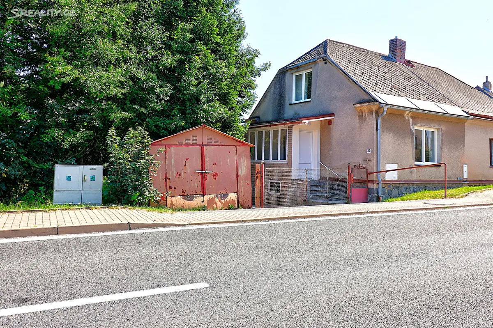

Financování a práce
Schválenou rekonstrukci zaplatíme my. Zajistíme dodavatele, koordinaci a kontrolu prací.
Posoudíme, které opravy mohou zvýšit jeho hodnotu. Schválenou rekonstrukci zaplatíme my a připravíme dům k prodeji. Investice se nám vrátí až po uskutečněném prodeji; odměnou je podíl pouze z kladné hodnoty navíc.
Na začátku stačí obec, jméno a kontakt.

Ne každý dům potřebuje kompletní rekonstrukci. Rozsah volíme podle stavu a přínosu pro prodej.
Nabídnout zděděný dům v původním stavu, nebo jej před prodejem opravit? Zohledníme technický stav, poptávku v místě a náklady. Před spoluprací musí být vyřešené vlastnictví a souhlas vlastníků.
Prověříme, co kupujícím vadí a kolik má smysl do domu vložit. Získáte návrh s rozpočtem. Schválenou rekonstrukci zaplatíme my a investici vypořádáme až po uskutečněném prodeji.
Zajistíme dodavatele, kontrolu prací a přehled o jejich průběhu. Podstatná rozhodnutí zůstávají na vás. Počítejte s časem na rekonstrukci a následný prodej.
Schválenou rekonstrukci zaplatíme my. Zajistíme dodavatele, koordinaci a kontrolu prací.
Schvalujete rozsah, limit rozpočtu, pravidla změn a konečnou nabídku kupujícího.
Z prodeje se vrací investice a hradí náklady prodeje. Naše odměna je podíl pouze z kladné hodnoty navíc po odečtení původní hodnoty domu, investice do oprav a nákladů prodeje.
Modelový výpočetPeníze do oprav vkládáme před prodejem. Jejich návrat zajišťuje zástavní právo zapsané v katastru. Rozsah, maximální výši a podmínky výmazu sjednáme předem.
Pokud už na domě máte hypotéku nebo jiné zajištění, nejdřív prověříme možnost spolupráce.
Zástava je skutečný závazek. Při nesplnění zajištěného dluhu může vést k jeho vymáhání z nemovitosti. Podmínky si můžete projít s vlastním právníkem.
Posouzení samo o sobě neznamená schválení projektu. Rozhodují náklady, rizika a očekávaný přínos oprav.
Vyšší prodejní cenu ani zisk negarantujeme. Pokud očekávaný přínos nepokryje náklady a rizika, rekonstrukci nedoporučíme.
Cenu domu ani rozsah oprav znát nemusíte. Začněme základními údaji.